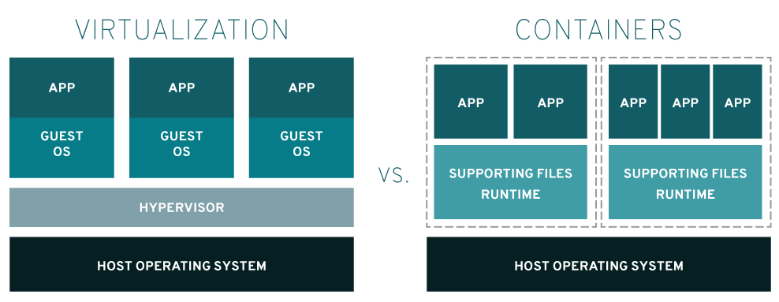

⚠ 转载请注明出处：作者：ZobinHuang，更新日期：July 3 2021

本作品由 ZobinHuang 采用 知识共享署名-非商业性使用-禁止演绎 4.0 国际许可协议 进行许可，在进行使用或分享前请查看权限要求。若发现侵权行为，会采取法律手段维护作者正当合法权益，谢谢配合。
1. 容器技术
1.1 容器技术简介

简单一句话来说就是，虚拟化实现了对计算机硬件的隔离，而容器技术实现了对操作系统的隔离。如上图所示[1]。
- 容器内的应用直接运行在宿主机的内核上的，容器没有自己的内核，所以十分轻便。
- 每个容器相互隔离，各自内部都有一个属于自己的文件系统，互不影响
这样一来，开发人员就可以把自己编写的应用程序结合自己所依赖的环境打包成为一个整体的容器，并且这个容器是轻量级的，可以跨平台移植的，十分方便和高效。
1.2 Linux Container
Linux 从内核 2.6.27 版本开始就开始支持 Linux Container (LXC)，LXC 能够帮助用户创建容器以用于实现对 Linux 系统的虚拟化。LXC 的实现技术依赖于 Linux 的 namespace 和 cgroup 机制，[2] 对这两者作了简单的介绍。
1.3 Docker 与 LXC 的关系
Docker 是一个基于 Go 语言开发的开源的引擎，可以轻松的为任何应用创建一个轻量级的、可移植的、自给自足的容器。一开始 Docker 利用 LXC 所原生依赖的Linux 的 namespace 和 cgroup 机制进行设计，后来就抛弃了 LXC 自己实现了容器技术的底层。
1.4 Docker 的优势[4]
在强调 DevOps 的今天，Docker 的优势可以总结为如下几点：
- 应用更快速的交付和部署：传统来说，运维人员需要阅读大量的帮助文档，解决大量的不兼容问题才能够把应用部署到线上环境中；有了 Docker 之后，开发人员只需把应用打包成为一个镜像，运维人员在线上环境上一键即可运行；
- 更便捷的升级和扩缩容：对于升级来说，由于应用与环境已经被打包，因此我们对应用进行升级只需要在升级之后再次打包即可，部署一样非常简单；对于扩缩容来说，如果单实例性能已经到瓶颈了，需要做水平扩展与负载均衡，我们仅需要在另几台机器上再次运行我们打包的镜像即可。
- 更简单的系统运维：在容器化之后，开发和运维的环境是高度一致的。
- 更高效的计算资源利用：Docker 是内核级别的虚拟化，由于使用了如此轻量级的容器来部署应用，这样一来在服务器上的部署密度就相对较大，可以极致地压榨服务器的性能。
附录：参考源
- Red Hat, Linux 容器是什么？Linux Container 简介
- 51CTO 博客, Linux Container(LXC)容器隔离实现机制
- 菜鸟教程, Docker 教程
- 狂神说 Java Docker最新超详细版教程通俗易懂 P4